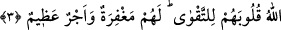
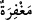
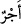

Büyükler demişlerdir ki; İblîs’in dokuz yüz senelik ibadeti bir edepsizliği ile zâyi
oldu.
Aşk ve niyâz yolunda edepli ol,
“Tarîkat bütünüyle edebdir” denilmiştir.
Allah Teâlâ’dan bizleri edep süsü ile süslenenlerden eylemesini niyâz ederiz.
3. Allah’ın elçisinin huzurunda seslerini kısanlar, şüphesiz Allah’ın kalplerini
takvâ ile imtihan ettiği kimselerdir. Onlara mağfiret ve büyük bir mükâfat vardır.
Bu, nehyolundukları davranışla alâkalı korkutma ve tehdidden sonra öylesi bir
davranışı terk etmeleri için teşvik sadedinde bir ifadedir.
Mânâ şudur: Rasûlullah’ın huzurunda edebe riâyet etmek için ve nehye muhâlefet
korkusuyla seslerini kısanlar, “İşte onlar, Allah’ın kalplerini takvâ ile imtihân ettiği
kimselerdir.”
‘İmtihan etmek’ ‘hâlis ve saf kılmak’ demektir. İbarenin mânâsı şöyle olur: “Kalplerini
bütün olumsuz unsurlardan arındırıp takvâ ile doldurdu”. Bu, mukayyedi söyleyip -ki o
altının arındırılmasıdır- mutlakı murâd etmek kabîlinden bir ifâdedir.
Beni kızgın imtihan potasında eritirsen
Minnet duyarım, böylece beni arıtmış olursun.
Allah onların kalplerini açtı ve genişletti’ demektir. Hz. Ömer’den gelen bir rivâyete
göre âyetin anlamı, ‘o kalplerden şehevâtı giderdi’ yani ‘şehevâtın muhabbetini kaldırdı,
kötü ahlâk pisliğinden temizleyip mekârim-i ahlâk ile bezeyip süsledi de beşerî
âdetlerden uzaklaştılar’ demektir.
“Onlar için” âhirette günahlarına büyük “bir bağışlama ve büyük bir ecir vardır”.
Âyette geçen (__WORD__) ve (__WORD__) kelimelerinin nekre oluşu ta’zîm içindir. Buna göre mânâ
şöyle olur: Onlar için seslerini kısmaları ve diğer taatleri ile kıyaslanamayacak kadar
büyük mağfiret ve ecir vardır. Bu ifâde, seslerini kısanların halini medhetmek ve onlar
gibi olmayanların kötü hâline de ta’rîzde bulunmak için böyle bir davranışın mükâfâtını
beyan eden öncesinden bağımsız yeni bir cümledir. Âyette mürşid-i kâmil bir şeyhin
huzurunda sesi kısmaya da işâret vardır. Çünkü o peygamber vârisidir ve onun hilâfeti
vardır. Sesi kısmak ancak vakar ve sekînet ehli kimselerin yapabileceği bir iştir.
Hüseyin (k.s.) şöyle der: Allah kimin kalbini takvâ ile imtihan ederse onun şiârı
Kur’ân, elbisesi îmân, sirâcı (kandili) tefekkür, kokusu takvâ, tahâreti tevbe, nezâfeti